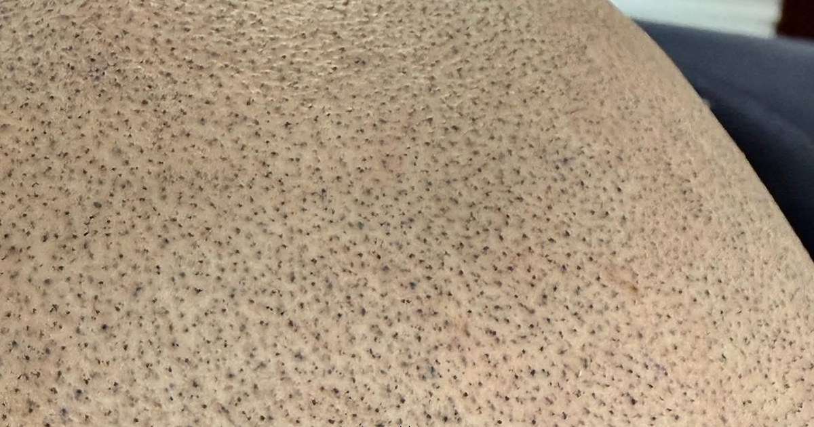
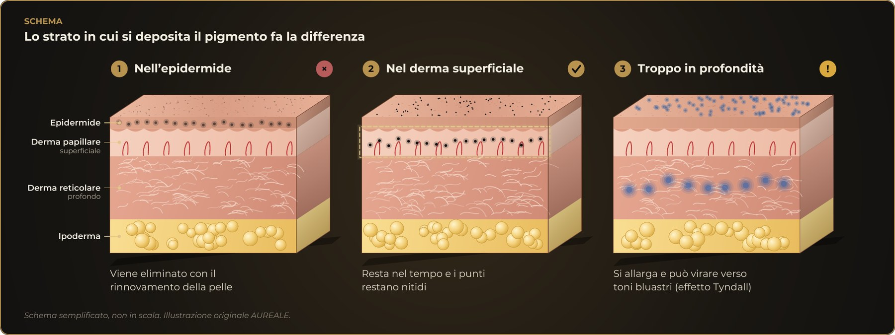

Journal

Chi cerca informazioni sulla tricopigmentazione incontra molti nomi: micropigmentazione, dermopigmentazione, SMP, tricopigmentazione 3D, 4D, “micro plus”. Sembra di trovarsi davanti a tecniche diverse. In gran parte, invece, sono nomi diversi per lo stesso principio: depositare pigmento nel derma con piccoli depositi controllati, per ricreare otticamente l’aspetto dei capelli rasati. Questo articolo prova a mettere ordine, con le fonti e con onestà anche sui limiti.
“Micropigmentazione” è il termine generale per il tatuaggio medicale e paramedicale; “dermopigmentazione” è usato in modo molto simile. Quando si applica ai capelli si parla di tricopigmentazione, dal greco thrix, capello. In inglese si usa soprattutto la sigla SMP, scalp micropigmentation. La Società internazionale di chirurgia del trapianto di capelli (ISHRS) descrive la SMP come una tecnica nota anche con il nome di tricopigmentazione.[1] Secondo un articolo di un centro tricologico britannico, il termine sarebbe stato adottato dagli operatori di un convegno di settore per indicare che questa forma di tatuaggio medicale riguarda specificamente la perdita di capelli, distinguendola da altri usi come le sopracciglia.[2]
Il tatuaggio medicale per camuffare le cicatrici esiste da tempo. La storia della SMP è ricostruita nel trattato di chirurgia Hair Transplantation: nel 2001 viene pubblicato il primo uso della micropigmentazione per trattare le cicatrici del cuoio capelluto (Traquina) e, poco dopo, la tecnica comincia a essere usata anche sugli uomini con calvizie, ed è allora che nasce il termine “scalp micropigmentation”.[3][14] Nel 2008 un gruppo coreano ha seguito 18 pazienti con cicatrici del cuoio capelluto e delle sopracciglia: 17 su 18 hanno avuto risultati buoni o eccellenti, senza complicanze, e le osservazioni al microscopio hanno mostrato che il pigmento veniva eliminato dal derma profondo entro tre settimane e restava nel derma superficiale.[4] Nel 2015 Rassman e colleghi hanno descritto la tecnica, eseguita con strumenti e pigmenti da tatuaggio cosmetico in uno schema a punteggiatura, discutendo istologia, fisiologia e patologia dei pigmenti nella pelle.[5] Uno studio del 2021 su 22 pazienti ha applicato tre sedute a cadenza settimanale e un ritocco dopo un mese, con uno sbiadimento minimo a una media di 20 mesi.[6]
Chi l’abbia inventata non ha una risposta univoca, e nessuna delle fonti consultate indica un’unica origine. Per il nome, i riferimenti sono operatori italiani ed europei; per le prime pubblicazioni mediche, il 2001; per la definizione di standard professionali, il Regno Unito: nel marzo 2019 l’associazione britannica dei chirurghi del trapianto di capelli (BAHRS) ha creato una categoria specifica per i professionisti della SMP, con standard propri. Gli autori di un articolo dell’ISHRS ricordano inoltre che la tecnica è relativamente nuova, che “micropigmentazione” e “tatuaggio” indicano la stessa procedura e che la terminologia è ancora in evoluzione.[15] Alcune cliniche, infine, rivendicano la paternità della tecnica o registrano come marchio il nome del proprio metodo: è utile distinguere un marchio commerciale da una scoperta scientifica.
Nella letteratura specialistica si trova una distinzione tra SMP “permanente” e tricopigmentazione “temporanea”: un capitolo del trattato Hair Transplantation (Thieme, 2023) descrive la tricopigmentazione temporanea come una tecnica distinta dalla SMP permanente e sviluppata per affrontare i problemi delle tecniche permanenti precedenti.[7] Quando due nomi indicano una differenza reale, quindi, riguarda soprattutto la durata prevista del pigmento, non la zona della pelle in cui viene posto.
Con qualunque nome, il pigmento deve stare nello stesso strato. Non nell’epidermide, che si rinnova di continuo e lo eliminerebbe in poche settimane.[8] E non in profondità: un deposito troppo profondo si allarga e può cambiare colore. Il viraggio verso toni bluastri è attribuito all’effetto Tyndall, cioè alla diffusione della luce da parte di particelle molto piccole.[9] La profondità non è quindi una scorciatoia per far durare di più il risultato. Come mostrato dagli studi istologici, ciò che resta nel tempo è il pigmento del derma superficiale.[4]

Questa parte riassume l’esperienza professionale dell’autrice e non deriva da uno studio specifico.
Nella letteratura medica consultata non risulta una definizione di tecniche “3D” o “4D”. Sono etichette commerciali*, che ogni operatore usa a modo suo per descrivere il risultato che vuole ottenere. Una vera tridimensionalità sarebbe quella del capello che cresce, e la tricopigmentazione non lo fa: l’effetto è ottico, e al tatto il cuoio capelluto è liscio. Parlare di “3D” può servire a spiegare che, variando dimensione, distribuzione, tonalità e densità dei punti, l’occhio percepisce più profondità. È una descrizione del risultato, non una tecnica a sé.
Lo stesso vale per “micro” e “micro plus”: i punti sono sempre piccoli. Sul confronto con le tecniche pelo a pelo si può leggere l’articolo sul pigmento e la fagocitosi.
* Alcune di queste diciture possono essere marchi registrati da singoli operatori: in tal caso indicano un metodo proprietario, non una tecnica a sé.
Più che fermarsi a un nome, conviene fare domande all’operatore:
Non risulta, in Italia, un corso di laurea in tricopigmentazione. La tricologia è un ambito medico-dermatologico diverso. I percorsi per esercitare sono demandati alle Regioni e cambiano da una all’altra. Un titolo di dottore o dottoressa può essere stato conseguito in un altro ambito: vale la pena chiedere in quale e dove.
Lazio. La legge regionale 3 marzo 2021, n. 2 ha introdotto un corso di 800 ore per l’esercizio delle attività di tatuaggio (e di 300 ore per il piercing), con una quota consistente di formazione pratica; la circolare regionale prevede esoneri per chi aveva già frequentato il precedente corso di 90 ore e per chi esercitava continuativamente da almeno cinque anni, con obbligo di aggiornamento.[10] Gli standard del percorso sono nella DGR 270 del 3 maggio 2022.[11]
Lombardia. La legge regionale 23 luglio 2021, n. 13 prevede corsi di durata non inferiore a 1.000 ore di attività teorico-pratiche per gli operatori di tatuaggio e piercing,[12] e la deliberazione attuativa indica un percorso di operatore di 1.500 ore.[13]
Altre Regioni hanno regole proprie, anche molto diverse: prima di iscriversi a un corso o di scegliere un operatore, conviene verificare i requisiti sul sito della propria Regione o presso la ASL.
Preferisco parlare di personalizzazione più che di sigle. Posso eseguire un effetto più deciso o uno più naturale, secondo il desiderio della persona, ma l’obiettivo resta lo stesso: rispettare il cuoio capelluto, la morfologia, l’anatomia e il colore naturale dei capelli, in modo da non creare uno stacco e da rendere omogenea la zona dove i capelli ci sono e quella dove l’effetto è ricreato otticamente. Nessun nome può cambiare due cose: il capello non cresce e il trattamento richiede un mantenimento nel tempo. Meglio saperlo prima.
Articolo a scopo informativo. Non sostituisce il parere medico né il corso abilitante.